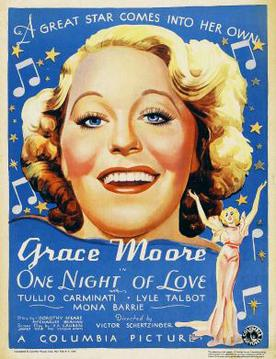

One Night of Love
7th Academy Awards
(Oscars 1935)
6 Nominations, 2 Awards
| Nominations | ||
|---|---|---|
| Category | Nominees | Result |
| Outstanding Production | Columbia | Nominated |
| Actress | Grace Moore | Nominated |
| Directing | Victor Schertzinger | Nominated |
| Film Editing | Gene Milford | Nominated |
| Sound Recording | John Livadary | Won |
| Music (Scoring) | Gus Kahn, Louis Silvers, and Victor Schertzinger | Won |